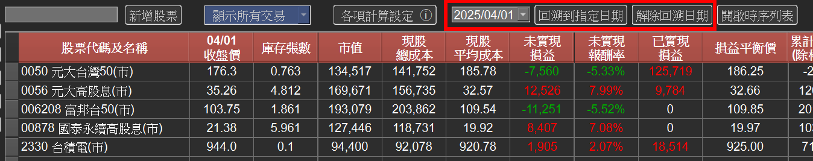

歷史回溯功能
有沒有想過：「2023 年 5 月那一天，我手上到底有哪些股票？當時的損益又是多少？」
v3.0.0 新增的歷史回溯功能，讓你只要選定任意一天， 主畫面會立刻切換成該日期的實際持股狀態， 包含庫存張數、收盤價、市值、現股總成本、未實現損益、已實現損益等所有欄位。

1、回溯到指定日期
在主畫面工具列上方選擇要回溯的日期， 接著點擊回溯到指定日期按鈕， 畫面所有欄位都會立即重新計算為該日期的真實狀態。
你可以拿來：
● 檢視某次重大行情前後（例如除權息日、財報日）持股組合的變化。
● 對照當時下單決策與後續結果，做為交易檢討的依據。
● 確認某次減資、分割、 併購事件當下的庫存狀態是否正確。
2、解除回溯
當你看完歷史狀態，點擊解除回溯日期按鈕， 畫面就會回到最新即時資料，不會影響你的交易紀錄。
3、與時序列表搭配使用
歷史回溯功能還可以搭配新版的時序列表使用： 先回溯到某個時間點，再開啟時序列表查看後續區段的所有交易與報酬率變化， 能夠完整重現你的投資歷程。
4、注意事項
● 回溯日期僅影響畫面顯示，不會修改任何已輸入的交易資料。
● 回溯期間不建議新增 / 修改交易，請先解除回溯後再進行操作。
● 若回溯日期早於該股票第一筆交易日，該股票會以無持股狀態呈現。